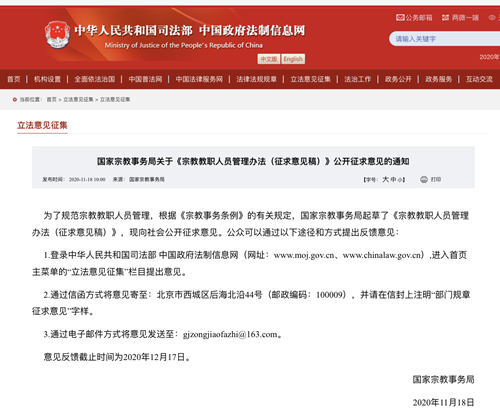

-
 手机版
手机版

-
 APP下载
APP下载
-
 微信
微信

手机版
APP下载
微信
 收藏
来源：国家宗教事务局
收藏
来源：国家宗教事务局

为了规范宗教教职人员管理，根据《宗教事务条例》的有关规定，国家宗教事务局起草了《宗教教职人员管理办法（征求意见稿）》，现向社会公开征求意见。公众可以通过以下途径和方式提出反馈意见：
1.登录中华人民共和国司法部 中国政府法制信息网（网址：www.moj.gov.cn、www.chinalaw.gov.cn）,进入首页主菜单的“立法意见征集”栏目提出意见。
2.通过信函方式将意见寄至：北京市西城区后海北沿44号（邮政编码：100009），并请在信封上注明“部门规章征求意见”字样。
3.通过电子邮件方式将意见发送至：gjzongjiaofazhi@163.com。
意见反馈截止时间为2020年12月17日。
国家宗教事务局
2020年11月18日

附：宗教教职人员管理办法（征求意见稿）
第一章 总则
第一条 为了规范宗教教职人员管理，保障宗教教职人员的合法权益，根据《宗教事务条例》，制定本办法。
第二条 本办法所称宗教教职人员，是指依法取得宗教教职人员资格、可以从事宗教教务活动的人员。
第三条 宗教教职人员应当热爱祖国，拥护中国共产党的领导，拥护社会主义制度，遵守宪法、法律、法规和规章，践行社会主义核心价值观，坚持我国宗教独立自主自办原则，坚持我国宗教中国化方向，维护国家统一、民族团结、宗教和睦与社会稳定。
第四条 县级以上人民政府宗教事务部门依法对宗教教职人员进行行政管理，保护宗教教职人员的合法权益，支持宗教团体、宗教院校和宗教活动场所培养、管理宗教教职人员，引导宗教教职人员在促进经济社会发展中发挥积极作用。
第二章 宗教教职人员的权利和义务
第五条 宗教教职人员依法享有下列权利：
（一）主持宗教活动、举行宗教仪式；
（二）从事宗教典籍整理、进行宗教教义教规和宗教文化研究；
（三）从事、接受宗教教育培训；
（四）参与所在的宗教团体、宗教院校、宗教活动场所的民主管理，按程序担任相应的职务；
（五）开展公益慈善活动；
（六）参加社会保障并享有相关权利；
（七）法律、法规和规章规定的其他权利。
第六条 宗教教职人员应当履行下列义务：
（一）维护国家利益和社会公共利益，在法律、法规和规章规定的范围内开展活动；
（二）接受宗教事务部门和其他有关部门的依法管理；
（三）遵守宗教团体制定的规章制度，接受所在的宗教团体、宗教院校、宗教活动场所的管理；
（四）服务信教公民，引导信教公民爱国守法；
（五）维护宗教活动正常秩序，抵制非法宗教活动和宗教极端思想，抵御境外势力利用宗教进行的渗透；
（六）促进和维护不同宗教之间、同一宗教内部以及信教公民和不信教公民之间的和睦；
（七）法律、法规和规章规定的其他义务。
第七条 宗教教职人员应当注重提升自身素质，提高宗教教务水平和组织管理能力，研究教义教规中有利于社会和谐、时代进步和健康文明的内容，并融入讲经讲道中，为推进我国宗教中国化发挥作用。
第八条 宗教教职人员发布互联网宗教信息，应当遵守国家互联网信息服务的有关规定。
第九条 宗教教职人员收入的取得应当符合法律、法规、规章和政策以及宗教团体规章制度的规定。宗教教职人员应当区分个人财产与宗教团体、宗教院校、宗教活动场所的财产，不得侵占、挪用、私分、损毁或者擅自处分宗教团体、宗教院校、宗教活动场所的合法财产。
宗教教职人员应当依法纳税，依法办理纳税申报。
第十条 担任宗教团体、宗教院校、宗教活动场所主要负责人以及从事财务相关工作的宗教教职人员应当按照国家财务、会计、资产管理有关法律法规，加强宗教团体、宗教院校、宗教活动场所财务管理。
第十一条 宗教教职人员赴国（境）外学习宗教，应当经全国性宗教团体或者省、自治区、直辖市宗教团体选派。
宗教教职人员出国（境）开展宗教交往，应当按照国家有关规定办理相关手续。
第十二条 宗教教职人员不得有下列行为：
（一）危害国家安全、公共安全，宣扬、支持、资助宗教极端主义，破坏民族团结、分裂国家，进行恐怖活动或者参与相关活动；
（二）干预行政、司法、教育等国家职能的实施；
（三）受境外势力支配，擅自接受境外宗教团体或者机构委任教职，以及其他违背宗教独立自主自办原则的行为；
（四）违反国家有关规定接受境内外捐赠；
（五）组织、主持或者参加未经批准的在宗教活动场所外举行的宗教活动；
（六）利用公益慈善活动或者在宗教院校以外的学校和其他教育机构传教，以及其他非法传教的行为；
（七）以宗教名义进行商业宣传；
（八）其他违反法律、法规和规章的行为。
第三章 宗教教职人员资格
第十三条 取得宗教教职人员资格应当经宗教团体认定，报县级以上人民政府宗教事务部门备案。
全国性宗教团体应当制定本宗教的宗教教职人员认定办法，规定宗教教职人员的称谓、认定条件和程序等。全国性宗教团体制定的宗教教职人员认定办法应当报国家宗教事务局备案。
宗教团体应当按照全国性宗教团体制定的宗教教职人员认定办法认定宗教教职人员。
第十四条 宗教团体应当自认定宗教教职人员之日起二十日内，填写宗教教职人员备案表，报县级以上人民政府宗教事务部门备案，并提交拟备案宗教教职人员的户口簿复印件和居民身份证复印件。
全国性宗教团体认定的宗教教职人员，报国家宗教事务局备案；省、自治区、直辖市宗教团体认定的宗教教职人员，报省级人民政府宗教事务部门备案；市（地、州、盟）宗教团体认定的宗教教职人员，报设区的市级人民政府宗教事务部门备案；县（市、区、旗）宗教团体认定的宗教教职人员，报县级人民政府宗教事务部门备案。
宗教教职人员备案表式样由国家宗教事务局制定。
第十五条 藏传佛教活佛传承继位，按照《宗教事务条例》《藏传佛教活佛转世管理办法》等有关规定办理。
第十六条 天主教的主教由中国天主教主教团批准并祝圣。中国天主教爱国会和中国天主教主教团应当在主教祝圣后二十日内，填写天主教主教备案表，报国家宗教事务局备案，并提交下列材料：
（一）该主教的户口簿复印件和居民身份证复印件；
（二）省、自治区、直辖市天主教团体出具的民主选举该主教的情况说明；
（三）中国天主教主教团批准书；
（四）主持祝圣的主教签署的祝圣情况说明。
天主教主教备案表式样由国家宗教事务局制定。
第十七条 宗教事务部门应当自收到宗教团体提交的备案材料之日起二十个工作日内，作出书面答复，逾期未答复的，视为已完成备案程序。
第十八条 拟备案的宗教教职人员有下列情形之一的，不予备案：
（一）未按照全国性宗教团体制定的宗教教职人员认定办法认定的；
（二）提交的备案材料不属实的。
第十九条 宗教事务部门办理备案后，应当为宗教教职人员编制备案号。备案号采用十二位数字编码，依次由六位行政区划代码、一位教别号和五位流水号组成。
第二十条 宗教团体应当向完成备案的宗教教职人员颁发宗教教职人员证书，并不得收取费用。
宗教教职人员证书在全国范围内适用。宗教团体、宗教事务部门不得重复认定或者备案宗教教职人员。
宗教教职人员证书由全国性宗教团体印制，证书应当载明备案号和有效期等内容。宗教教职人员应当在证书有效期满前及时办理延期手续。
第二十一条 宗教教职人员有下列情形之一的，宗教团体应当按照管理职责到相应的宗教事务部门办理注销备案手续，并以适当方式公告：
（一）被宗教事务部门依法建议宗教团体取消宗教教职人员资格的；
（二）被宗教团体依照本宗教的有关规定取消宗教教职人员资格的；
（三）因自愿放弃、死亡或者其他原因丧失宗教教职人员资格的。
第四章 宗教活动场所主要教职
第二十二条 本办法所称宗教活动场所主要教职，是指在宗教活动场所主持宗教教务的宗教教职人员。
全国性宗教团体应当制定本宗教的宗教活动场所主要教职任职办法，规定宗教活动场所主要教职的具体范围、任职条件和程序等。全国性宗教团体制定的宗教活动场所主要教职任职办法应当报国家宗教事务局备案。
第二十三条 拟任宗教活动场所主要教职的宗教教职人员按照全国性宗教团体制定的宗教活动场所主要教职任职办法产生后十日内，由该场所报县级以上人民政府宗教事务部门备案，填写宗教活动场所主要教职任职备案表，并提交下列材料：
（一）拟任职人员产生情况说明；
（二）拟任职人员的户口簿复印件、居民身份证复印件和宗教教职人员证书复印件。
拟任职人员离任其他宗教活动场所主要教职的，还应当提交离任该场所主要教职的注销备案材料。
宗教活动场所主要教职任职备案表式样由国家宗教事务局制定。
第二十四条 县级以上人民政府宗教事务部门应当自收到宗教活动场所提交的备案材料之日起二十个工作日内，作出书面答复，逾期未答复的，视为已完成备案程序。
第二十五条 拟备案的宗教活动场所主要教职有下列情形之一的，不予备案：
（一）拟任职人员未按照全国性宗教团体制定的宗教活动场所主要教职任职办法产生的；
（二）拟任职人员离任其他宗教活动场所主要教职未办理注销备案手续的；
（三）提交的备案材料不属实的。
第二十六条 宗教活动场所主要教职备案程序完成后，该场所可为担任主要教职的宗教教职人员举行任职仪式，正式赋予其职责。
第二十七条 宗教活动场所主要教职实行任期制，任期三至五年。期满后拟继续担任主要教职的，应当按照本办法第二十三条规定办理。
第二十八条 宗教教职人员离任宗教活动场所主要教职，该宗教活动场所应当按照任职备案程序办理注销备案手续，并提交下列材料：
（一）该场所管理组织作出宗教教职人员离任宗教活动场所主要教职决定的情况说明；
（二）该场所所在地宗教团体出具的书面意见。
离任宗教活动场所主要教职的宗教教职人员同时担任该场所管理组织主要负责人或者财务管理机构负责人的，宗教活动场所还应当提交离任财务审查情况的报告。
第二十九条 宗教教职人员离任宗教活动场所主要教职有下列情形之一的，不予注销备案：
（一）该场所管理组织未按照全国性宗教团体制定的宗教活动场所主要教职任职办法规定的程序，作出宗教教职人员离任宗教活动场所主要教职决定的；
（二）未经该场所所在地宗教团体同意的；
（三）担任该场所管理组织主要负责人或者财务管理机构负责人未办理离任财务审查的。
第三十条 宗教教职人员一般只能担任一个宗教活动场所的主要教职。确有需要的，可以兼任一个宗教活动场所的主要教职。
兼任宗教活动场所主要教职，应当经拟兼任的宗教活动场所所在地县（市、区、旗）宗教团体同意，由该场所将兼任情况报县级人民政府宗教事务部门，县级人民政府宗教事务部门逐级报省级人民政府宗教事务部门备案。跨省、自治区、直辖市兼任的，拟兼任的宗教活动场所所在地省级人民政府宗教事务部门还应当征求该宗教教职人员现任职所在地省级人民政府宗教事务部门的意见。
第三十一条 担任宗教活动场所主要教职的宗教教职人员有下列情形之一的，应当按照任职备案程序办理注销备案手续，并以适当方式公告：
（一）丧失宗教教职人员资格的；
（二）违反法律、法规、规章或者宗教团体规章制度被撤销宗教活动场所主要教职的；
（三）超过一年未履行宗教活动场所主要教职职责或者不具备正常履行主要教职职责能力的。
第五章 监督管理
第三十二条 宗教事务部门应当依法履行宗教教职人员备案和宗教活动场所主要教职备案的职责，指导监督宗教团体、宗教院校、宗教活动场所加强对宗教教职人员的管理。
第三十三条 宗教事务部门应当充分利用政务信息网络资源，加强宗教教职人员信息化管理。
国家宗教事务局建立宗教教职人员信息库，地方人民政府宗教事务部门应当及时提供和更新宗教教职人员的基本信息、奖惩情况、注销备案等信息。
第三十四条 宗教教职人员跨省、自治区、直辖市从事宗教教务活动的，应当经离开地和前往地的省、自治区、直辖市宗教团体同意，并报两地的省级人民政府宗教事务部门备案。其中，跨省、自治区、直辖市从事宗教教务活动一年以上的，由两地的省级人民政府宗教事务部门通过宗教教职人员信息库办理相关信息变更。对该宗教教职人员的管理职责转移至迁入地相应的宗教事务部门和宗教团体。
宗教教职人员跨县、设区的市级行政区域从事宗教教务活动的管理，由省、自治区、直辖市根据实际情况制定相关规定。
第三十五条 宗教团体应当制定宗教教职人员培养规划，加强宗教教职人员的政治教育、法治教育、文化教育、宗教教育，提高宗教教职人员的综合素质和宗教教职人员队伍的整体素质。
第三十六条 全国性宗教团体和颁发宗教教职人员证书的宗教团体应当规范宗教教职人员证书管理，不得违规颁发证书，不得借颁发证书牟利。
第三十七条 宗教团体应当建立健全宗教教职人员管理制度，制定宗教教职人员行为规范，健全宗教教职人员奖惩机制和准入、退出机制，对违反法律、法规、规章和本团体规章制度的宗教教职人员予以相应处罚。
第三十八条 宗教团体应当制定宗教教职人员考核制度，对宗教教职人员进行考核，将考核结果作为任职、奖惩等的重要依据。
第三十九条 宗教团体应当建立宗教教职人员档案，健全宗教团体、宗教院校、宗教活动场所的宗教教职人员信息共享机制，定期将宗教教职人员信息变更情况报送宗教事务部门。
宗教院校应当将本院校宗教教职人员有关情况及时报送设立该院校的宗教团体。
宗教活动场所应当将本场所宗教教职人员有关情况及时报送所在地宗教团体和宗教事务部门。
第四十条 宗教院校应当坚持正确的办学方向，提高办学质量，培养高素质的宗教教职人员。
第四十一条 宗教院校、宗教活动场所应当建立健全本院校或者场所宗教教职人员管理制度，加强对宗教教职人员的日常监督和管理。
宗教活动场所接收宗教教职人员应当严格把关，核查身份并登记造册，不得超出本场所容纳能力及经济能力接收宗教教职人员。
第四十二条 担任宗教活动场所主要教职的宗教教职人员应当履行宗教教务管理职责，接受宗教团体的教务指导，服从宗教活动场所管理组织的管理，接受所在宗教活动场所的宗教教职人员和信教公民的监督。
第四十三条 宗教事务部门和宗教团体、宗教院校、宗教活动场所收到反映宗教教职人员违反法律、法规、规章或者宗教团体规章制度材料的，应当调查核实，依法依规予以处理。
第四十四条 宗教教职人员认为宗教团体、宗教院校、宗教活动场所侵犯其合法权益的，可以向所在地宗教事务部门反映，宗教事务部门应当调查核实，依法予以处理。
第六章 法律责任
第四十五条 公职人员在宗教教职人员管理工作中滥用职权、玩忽职守、徇私舞弊，应当给予处分的，依法给予处分；构成犯罪的，依法追究刑事责任。
第四十六条 宗教团体、宗教院校、宗教活动场所有下列行为之一的，由宗教事务部门责令改正，拒不改正的，按照《宗教事务条例》第六十五条的规定予以处理：
（一）未建立健全宗教教职人员管理制度的；
（二）未按本办法规定管理宗教教职人员的；
（三）未按规定认定或者批准宗教教职人员的；
（四）宗教活动场所未按规定选任宗教活动场所主要教职的；
（五）宗教团体、宗教活动场所未按本办法规定办理宗教教职人员或者宗教活动场所主要教职备案手续的；
（六）未按规定颁发宗教教职人员证书，或者借颁发证书牟利的；
（七）侵犯宗教教职人员合法权益的；
（八）其他违反本办法有关规定的行为。
第四十七条 宗教教职人员违反本办法第三条和第二章相关规定的，按照《宗教事务条例》第七十三条等规定予以处理。
第四十八条 对宗教事务部门的行政行为不服的，可以依法申请行政复议；对行政复议决定不服的，可以依法提起行政诉讼。
第七章 附则
第四十九条 县（市、区、旗）没有相关宗教团体的，本办法规定的相应职责由市（地、州、盟）宗教团体履行。
市（地、州、盟）没有相关宗教团体的，相应职责由省、自治区、直辖市宗教团体履行。
省、自治区、直辖市没有相关宗教团体的，相应职责由全国性宗教团体履行。
第五十条 本办法由国家宗教事务局负责解释。
第五十一条 本办法自 年 月 日起实施。2006年国家宗教事务局公布的《宗教教职人员备案办法》《宗教活动场所主要教职任职备案办法》同时废止。